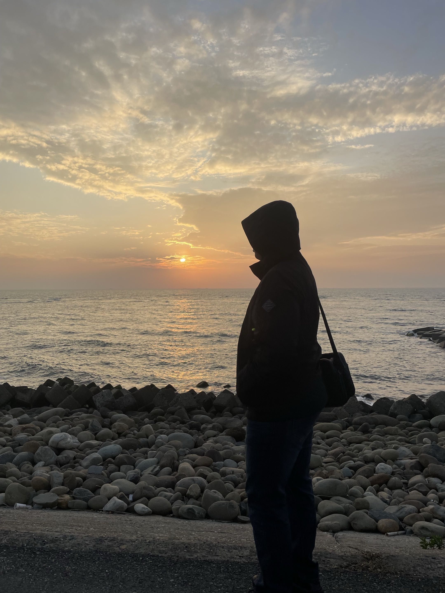

羽瞳 團長
主修：APEX / 怪物彈珠
放浪團的發起人，擅長打怪物彈珠，也擅長在 Discord跟Msg 裡發廢文。

子彈 音遊擔當
主修：音遊 / FPS
團裡的音遊擔當，音遊實力堅強，各類音遊都有不錯的成績。 也是貓又おかゆ的粉絲，常常在尋找貓又おかゆ的最新消息。
Gary 破風者
主修：APEX / 崩鐵 / 攝影
團裡的破風者，喜歡騎車跟打遊戲，喜歡拍攝，說走就走的旅行家。

天際 專題組長
主修：戰略遊戲
喜歡玩各種戰略遊戲，尤其是即時戰略類型。常常在群組裡分享遊戲心得與攻略。
Lanch 氣氛擔當
主修：講幹話
團裡的氣氛擔當，總是能在群組裡帶來歡笑。喜歡在遊戲中搞笑，也喜歡在語音頻道裡講幹話。